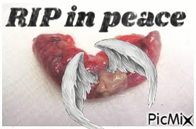
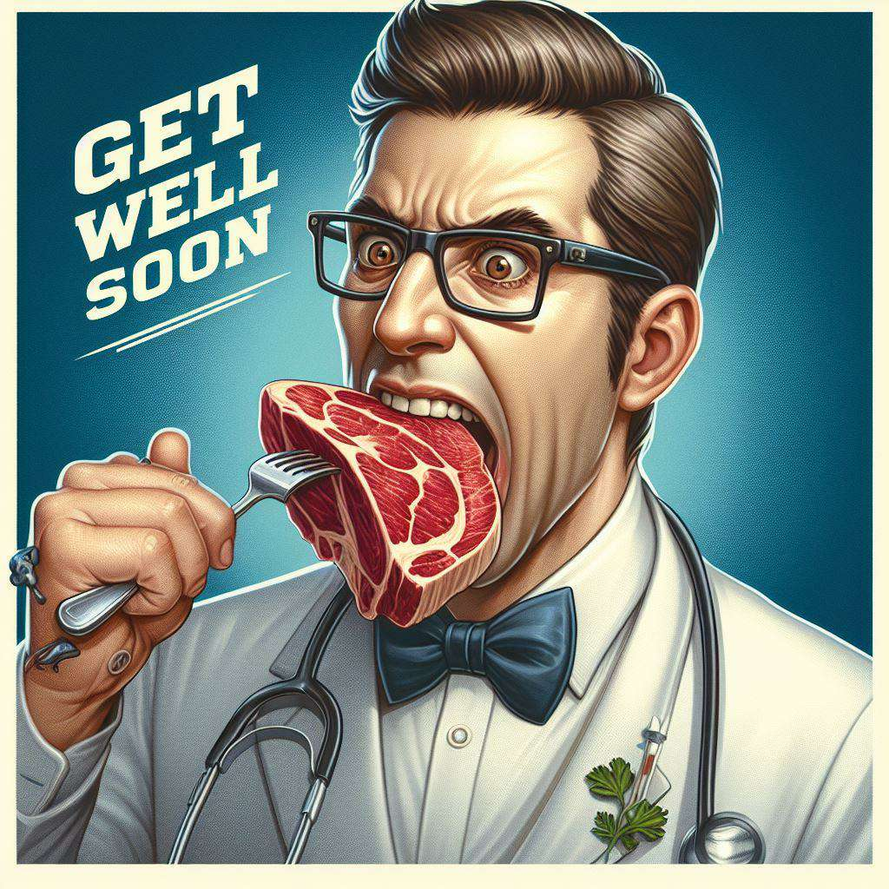

Steve's appendix, a small yet steadfast companion in his journey through life. Though often overlooked and seldom praised, this humble organ performed its duties with quiet dedication. For years, it stood vigilant, a sentinel within, contributing to the delicate balance of Steve's inner world. Steve's appendix leaves behind a legacy of resilience and unheralded service. It witnessed his triumphs and tribulations, silently supporting him from within. Its departure marks the end of an era, a reminder of the transient nature of our own corporeal existence. Today, we honor the memory of Steve's appendix, acknowledging the silent contributions it made to his well-being. Rest in peace, dear appendix, your service will not be forgotten.
Steve's appendix has left Steve behind, along with a great deal of pus in his guts. The surgeon was very clear that Steve's guts were "Really Gross, grosser than normal guts" before making a vomiting motion and a gagging sound. Steve is recovering the loss of his appendix at Oschner Hospital, which ironically was blown up years ago by a Ananasi he was playing in a larp. Life is funny. Arson isn't.
"I didnt know Steve's appendix well but I know Steve, and I know the appendix belonged to him. Often our path's diverge in life and this was the time for Steve and his appendix. With a sad heart and well wishes we see off Steve's appendix to continue its journey alone. Goodbye, Steve's appendix... goodbye." -Richard
"Out of Steve's body but forever in our hearts." - Amanda
"Dearest Appendix",
"As the mighty Bee Wizard of the Enchanted Hive, I buzz forth to deliver a whimsical yet heartfelt adieu. You, dear Appendix, have lingered in Steven's abdomen like a hidden treasure in the honeycomb of his being. Yet, your time in the hive has drawn to a close, and it is with bittersweet magic that we bid you farewell.
In the grand tapestry of life, every creature, every organ, plays its role. You, noble Appendix, were a silent sentinel, a watcher from within. Though your departure comes amidst a flurry of pain, it heralds a new dawn for Steven, a dawn of health and vitality.
We wizards of the buzzing realm, with our arcane knowledge of pollen and propolis, extend our healing spells to Steven. May his recovery be swift and sweet as nectar, may his days ahead be free from the shadows of ailment. Your departure, though mourned, paves the way for brighter tomorrows and untroubled adventures.
So, with the magic of a thousand bees, I weave this spell of wellness and joy. Fly free, dear Appendix, into the annals of memory, and let Steven rise anew, strong and hale, buzzing with the vigor of a rejuvenated spirit.
Fare thee well, and may the honeyed winds of healing carry Steven swiftly back to health."
With mystic buzzes and enchanted wishes,
The Bee Wizard
"Get well, Steve! Julian's story has only just begun." -Charles
“Dear Brother…on the fifth day of last month I was visited with a palsy which advances upon me…I was going to the Hay market and before I went halfe a mile off I was taken with a numbness and a kind of stiffness(?) in my left hand. It surprized me much and I turned home. I was immediately bled and sent for my apothecary in ye town of Hay whose advised to contact a physician. I directly sent for Dr Applby(?) of Hereford who attended me on Saturday. I have been bled, cupped, blister’d [and purged] and yet without effect. My disorder has advanced that it now affects all of my left side, both arm and leg.” Feel better soon! I figured you would enjoy some 18th century letter of someone describing his malady while you recover lol.-John
I made this for Steve-Meghen